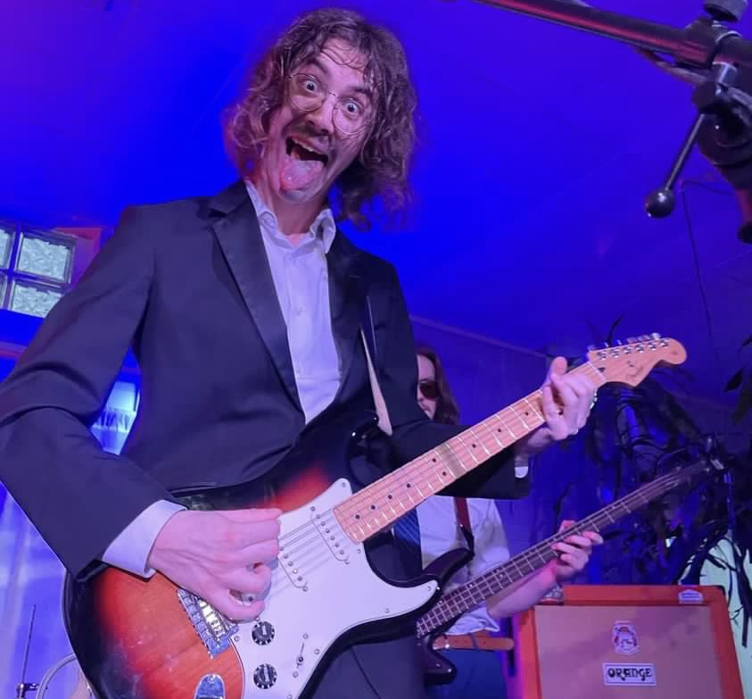

About me

My name is Cole Petrie and I am a Senior Audio Production major at Illinois State University. I have worked and played in a variety of different situations from recording studios, marching bands, and even being a lead role in a muiscal a few times.
Currenty I run the local DIY house venue 'Happy Place' and play in local band 'Mulch', were I write, sing, and play guitar for the band. Both of these projects began this earlier this semester and have since become very successful in a few short months. Please checkout the sub-pages to learn more.
After College
My eventual goal is to work in the music industry as either a live sound engineer for a rock band or music venue. I am currently located in the central Illinois area but plan on moving up to Chicago after graduation in the fall 2023.